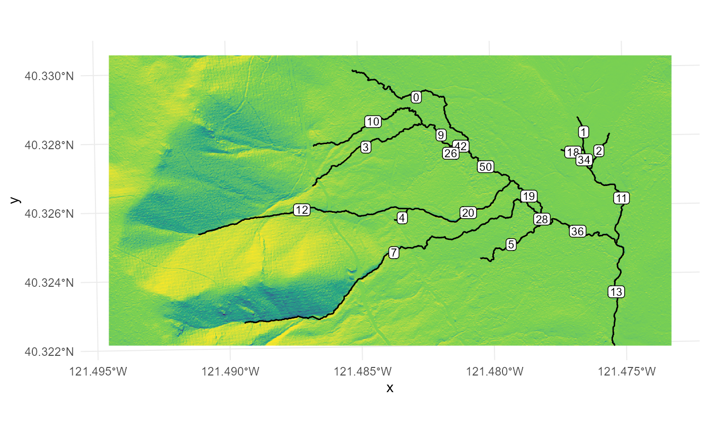
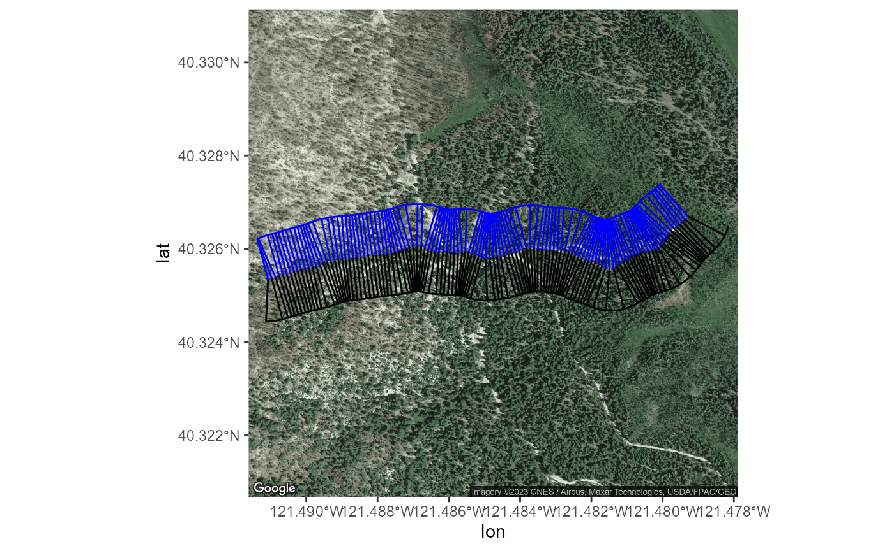
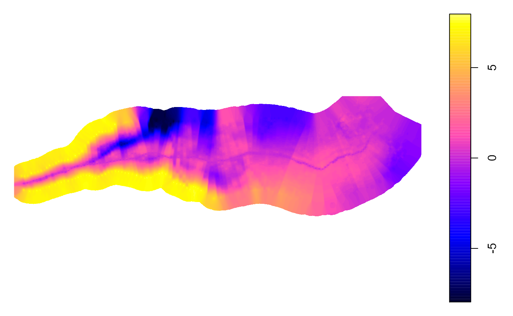

Example ProcessSpace tool application
Load the required packages:
#devtools::install_github("adamkc/ProcessSpace") suppressPackageStartupMessages({ library(ProcessSpace) library(ggmap) library(raster) })
Load the Data files and check them
These are generic files that are provided with the ProcessSpace package. You’ll need to supply your own raster DEM and streamline shapefile eventually.
rasterFilePath <- system.file("external/raster.tif", package="ProcessSpace") streamShapefilePath <- system.file("external/streams.shp", package="ProcessSpace") streams <- sf::read_sf(streamShapefilePath)
And now lets plot the raster hillshade. It takes a little time to calculate the hillshade values. This step isn’t necessary for running the ProcessSpace tool.
r <- raster::raster(rasterFilePath) s <- raster::terrain(r, opt="slope") a <- raster::terrain(r, opt="aspect") h <- raster::hillShade(s,a) rasterPlot <- h %>% rasterToPoints() %>% data.frame() %>% ggplot() + geom_raster(aes(x=x,y=y,fill=layer), show.legend = FALSE) + geom_sf(data=streams) + geom_sf_label(data=streams,aes(label=LINKNO),size=3, label.padding=unit(.1,"lines")) + scale_fill_viridis_c() + theme_minimal() rasterPlot

Let’s imagine we are interested in knowing more about stream segments 12 and 20. It doesn’t matter how we select these two segments as long as they’re all we feed to the *ProcessSpace* functions. In this case, we’ll use the dplyr::filter function to create a new object, selecting using the LINKNO field. But you could do a spatial filter or any number of other filter methods. Your streamfile may not have a LINKNO attribute, in which case you can use the unique identifier column for your particular dataset.
Let’s pull those two aside and confirm we grabbed the right ones by plotting the results. We’ll highlight the two segments we selected in blue. The ProcessSpace tool currently can’t handle branching stream structures so we need to be careful here to only grab one flow path, without missing segments in the middle.
targetStream <- streams %>% dplyr::filter(LINKNO %in% c(12,20)) #Check that you grabbed the right streams: ggplot(streams) + geom_sf() + geom_sf(data=targetStream,col="blue4",size=3,alpha=.6) + theme_nothing()

Great. We clearly grabbed the correct segments.
Lets run it through the tool!
First, generate the cross sections:
This places evenly spaced points along the selected stream file at the interval selected. Then it draws semi-perpendicular cross sections at each point at for the length given. You need to indicate the general flow direction of the stream by indicating which direction the stream is flowing from, using the argument cut1Dir. For example, if the stream flows West to East provide “W”, if it flows North to East provide “N”. The cross sections are produced without access to a raster file, so the package cannot just look to determine flow direction.
If you’ve linked the ggmap package to a Google Cloud Platform account, this function will return a satellite image of the location being analyzed. If you haven’t linked an account, it will return a topographic map.
transectObject <- targetStream %>% generateCrossSections(xSectionDensity = units::as_units(50,"m"), googleZoom=16, xSectionLength = units::as_units(100,"m"), cut1Dir = "W")
## Realigning stream upstream to downstream. -- Completed in 0.04 mins.We can peek into the transectObject that is returned by this function. It should be a list with 8 named entries (mainLine, leftSide, rightSide, ls0, rs0, plotBbox, satImage, and sampledPoints). We stop the process here with our generated cross sections to be used for another purpose. Or we can proceed to additional *ProcessSpace* functions.
transectObject$satImage %>% ggmap() + geom_sf(data=transectObject$mainLine %>% sf::st_transform(4326), col="blue4",alpha=.5,size=2,inherit.aes = FALSE) + geom_sf(data=transectObject$ls0 %>% sf::st_transform(4326), inherit.aes = FALSE) + geom_sf(data=transectObject$rs0 %>% sf::st_transform(4326), col="blue",inherit.aes = FALSE) + geom_sf(data=transectObject$leftSide %>% sf::st_transform(4326),inherit.aes = FALSE) + geom_sf(data=transectObject$rightSide %>% sf::st_transform(4326), col="blue",inherit.aes = FALSE)

Second, run it through a series of manipulations:
The ProcessSpace package uses ten or so functions to work through the analysis. They can be run one at a time, like in the commented code below. Or the function allAtOnce runs them … all at once…
##Long and version: # transectObject <- transectObject %>% # addTopoLines(rasterDir = rasterFilePath) %>% # addStreamChannels(rasterDir = rasterFilePath,streamDir = streamShapefilePath) %>% # addCrossSectionElevations(rasterDir = rasterFilePath) %>% # addProcessSpace() %>% # buildXSectionPlot(plotFileName = "exampleOutput.pdf",streamDir = streamShapefilePath) %>% # rasterPlotter(rasterDir = rasterFilePath) ## Short and version: transectObject <- transectObject %>% allAtOnce(outputFilename = "exampleOutput.pdf", rasterDir = rasterFilePath, verticalCutoff=8, streamDir = streamShapefilePath, returnObject = TRUE, doExportSpatial = FALSE)
## Adding TopoLines -- Completed in 0.02 mins.
## Extracting Cross Section Elevations -- Completed in 0.05 mins.
## Calculating Process Space Polygons -- Completed in 0.08 mins.
## Generating Map Plot -- Completed in 0 mins.## Generating Detrended Elevation Raster[inverse distance weighted interpolation]
## -- Completed in 0.11 mins.Then export the results as a comprehensive KMZ file:
This produces a KMZ file that contains the cross section plots imbedded. Clicking the points along the stream file pull up the cross section plots. This can also be produced with the allAtOnce function by passing the doExportSpatial = TRUE argument. Producing the ggplot files for each transect can be time consuming (~1 second per plot).
exportSpatials(transectObject,sectionName = "exampleOutput")
## Writing kml to:
## exampleOutput.kml
## There are 24 ggplots being generated.
## 24,## 23,## 22,## 21,## 20,## 19,## 18,## 17,## 16,## 15,## 14,## 13,## 12,## 11,## 10,## 9,## 8,## 7,## 6,## 5,## 4,## 3,## 2,## 1,Here’s what the detrended raster and a single cross section plot can look like:
Regions of the map with lower elevations than the stream are green, regions similar in elevation to the stream are blue, and regions higher than the stream elevation go from red to tan.
legend <- magick::image_read("exampleOutput_El_legend.png") detrend <- magick::image_read("exampleOutput_El.png") magick::image_mosaic(c(magick::image_background(detrend,"grey"),legend))

Cross section look like this. They are plotted as though you’re looking upstream (which comes naturally when the raster and cross sections are viewed 3D in Google Earth.) The blue and green bands show elevations within 1ft and 2ft of the stream channel. This particular transect shows the stream is captured by a highly incised channel and the terrain slopes downhill in either perpendicular direction from the stream path. Perhaps this is not a natural flow path?
plot(magick::image_read("exampleOutput-Images/Transect_5_temp_.png"))